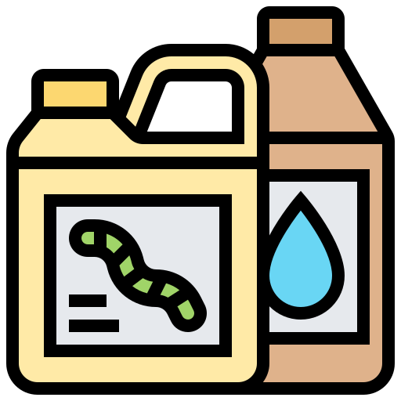

<p-menubar>
  <ng-template pTemplate="start">
      
  </ng-template>
  <ng-template pTemplate="end">
    <p-tabMenu [model]="items" [activeItem]="activeItem" (activeItemChange)="onActiveItemChange($event)"></p-tabMenu>
  </ng-template>
</p-menubar>
